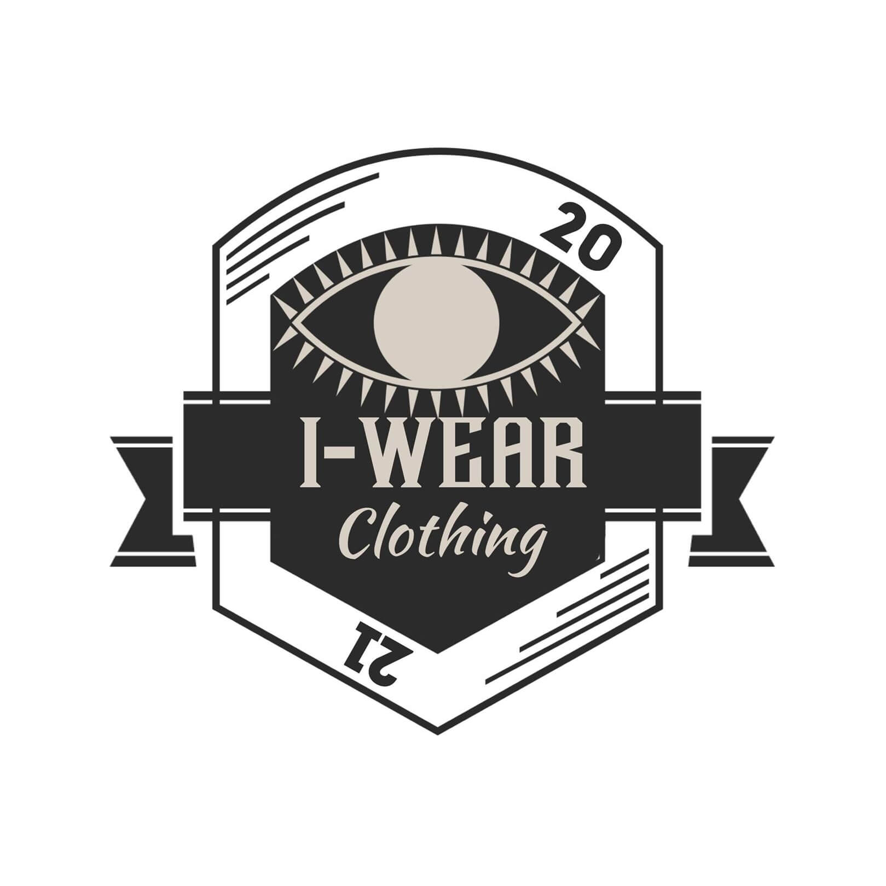

How To Live Your Life With Freedom?

Van Joseph De Ramos
When we're questioned about freedom, we all have different thoughts about what it means. For some, it may be the freedom to do something, speak up, and go wherever they want. But, guess what? There are no inaccurate perceptions because freedom can be defined in any way, as the word freedom conveys.
Freedom As The Nature Of Humanity
It's wonderful to know that we have some freedoms from the minute we are born into this world. We can't deny that everyone desires to be autonomous and democratic from the surroundings around them, and we've all experienced this at some point. However, there have been occasions when we cannot control certain things and achieve such freedom for the greater good. Everyone, regardless of age, has the right to be free.
Freedom Is Not Just About Being Free
Freedom entails more than just being free; it also involves respecting others' rights and understanding their perspectives. As we subsequently embrace our freedom while enjoying our lives to the fullest, we must keep in mind that we, as human beings, must nevertheless respect the rights of others and forsake the notion of continuing to live happily according to our preferences. There are times when we expect to live our lives according to our definitions of freedom, ignorant of the fact that we are harming the lives and rights of others. To have this so-called freedom, we must consider those around us when exercising our it.
What Makes Freedom a Bad Thing?
Everyone has always found freedom to be a virtue. "Freedom is the oxygen of our soul," Moshe Dayan stated. But when did freedom become a mistake? When your freedom reduces the value of someone else's rights and freedoms, freedom simply becomes a bad thing. Before we can enjoy our freedom, we must first evaluate our conduct and determine who might be impacted by it.
Freedom is always good, but it must be practiced in the most effective manner possible. We cannot live our lives to the fullest if we are impacting the lives of others because the moment we obstruct the lives of others, we are no longer living freely. We don't want this to happen to ourselves, so we must not express our freedom in ways that conflict with the freedom and well-being of others. The actual issue is how individuals use their freedom, not the freedom itself.
How Can We Live Our Lives Freely?
Living with freedom is never easy because we are bound by our own constraints due to various circumstances. But, the good news is that there is a slew of options for gradually gaining freedom. The most practical way to achieve freedom is to rid oneself of negative thoughts. It's about disposing of your worries and fears and simply living your life the way you want it to be while protecting the rights and freedoms of others.
It's also a good idea to give yourself sufficient time amid everything happening in the world. It would help if you constantly reminded yourself that you should devote time to tranquility and independence. Rather than wasting time on other people, thinking about yourself first is an excellent way to live your life as best as possible. With enough time to yourself, you'll undoubtedly come to several realizations about the value of your existence.
How The Members of I-wearclothing Struggled To Achieve Real Freedom After Experiencing Selfish Freedom
Most of us have defined freedom as being able to enjoy our lives without having to worry about what is going on around us. But we aren't conscious that our form of liberty is already impacting others. What we enjoy doing has posed a problem for our family, health, and, most significantly, the people around us. However, we didn't allow ourselves to be imprisoned by the idea of enjoying a life of freedom based only on our pleasure.
With time, we began to realize that our freedom had become a burden to everybody. We grew aware and changed for the better as time progressed. Mistakes are unavoidable, but they are terrible if not assessed and corrected. Similarly, our effort to inspire people and develop not only a profit-making company but an organization that helps everyone mentally, socially, and emotionally has been effective, and we promise to keep bringing rays of light to everyone.
If you don't have the freedom to make mistakes, you don't have true freedom.
If you've made it this far through the blog, you're facing the task of reevaluating your independence. Live freely, but let others experience the same!